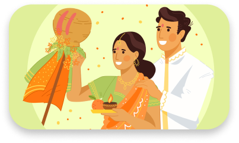
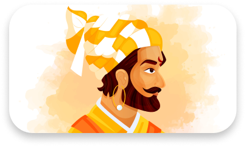

Events
Right from grand cultural performances and joyful festivities to competitions and technical events, we at Yuva Marathi, conduct a wide range of events attended by thousands of students, be it online or offline. Although the pandemic has clipped our wings, we have embraced Social Media and have managed to stimulate our audience through a variety of online events and by introducing one enlightened speaker after the other.
Aikya
Aikya is the celebration of the diverse culture of Bharat, and every year, Yuva Marathi proudly shoulders the responsibility of representing Maharashtra and Marathi culture. Read more
View images
Gudi Padwa
Gudhipadwa, the grandest of our events, is the celebration of the Marathi New Year through ‘Gudhi Pujan’, energetic performances and a grand feast. Read more
View imagesShivjallosh
Every year, on the auspicious occasion of the Birth Anniversary of Chhatrapati Shivaji Maharaj, ‘Shivajallosh’ is our way of commemorating the life’s work of this lion of a man. Read more
View images